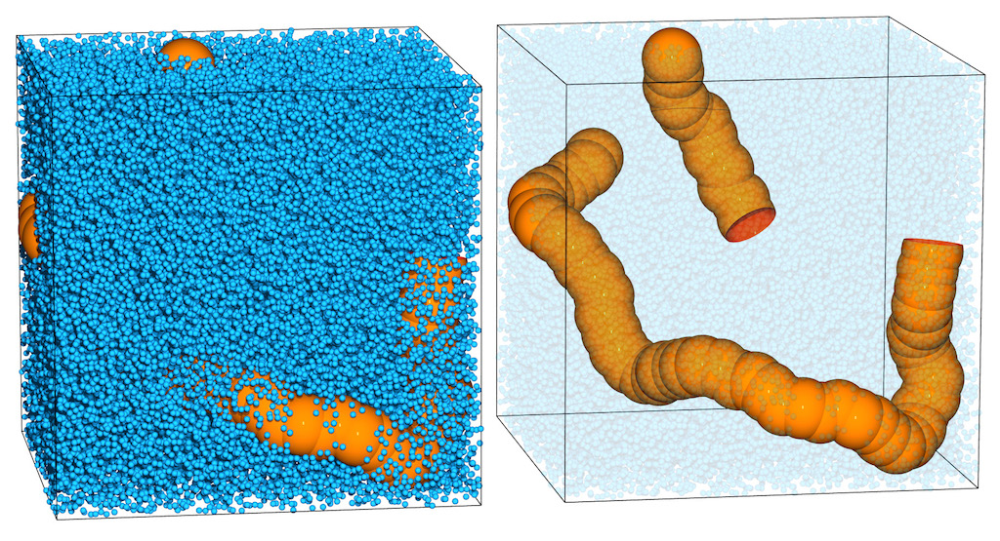
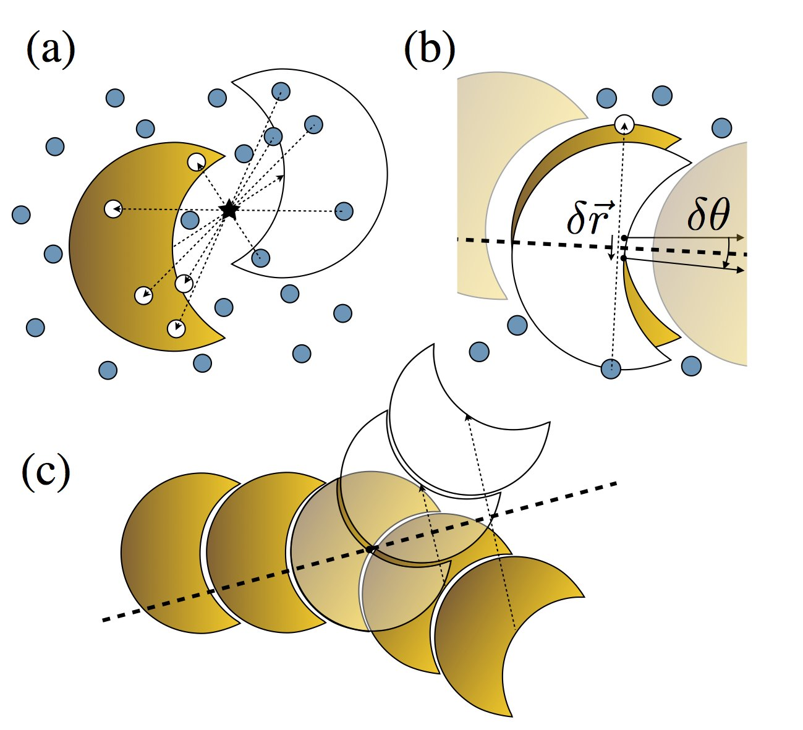
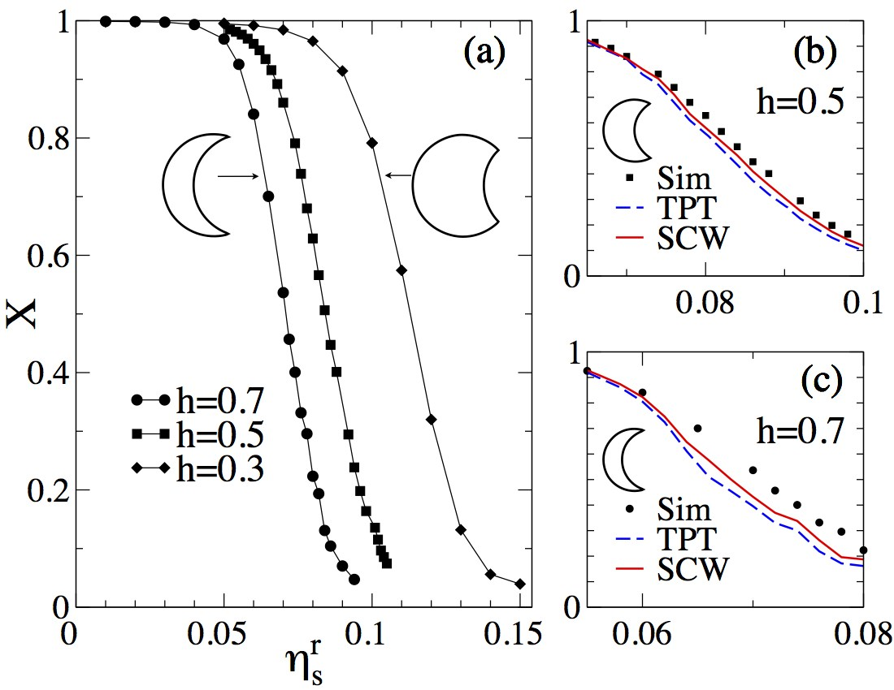
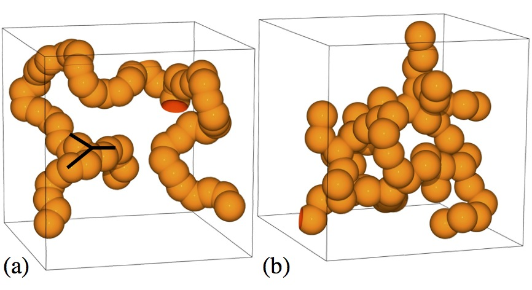
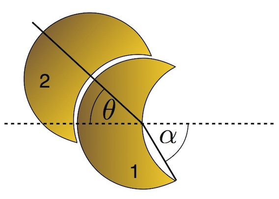
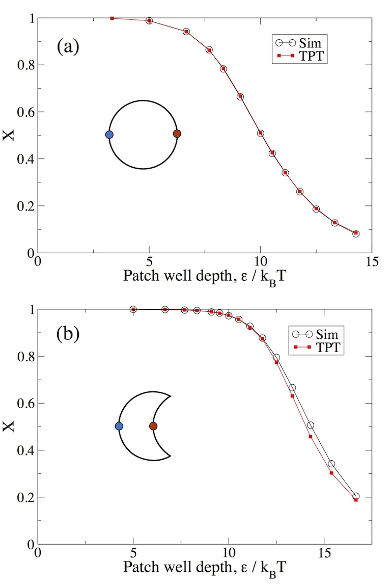
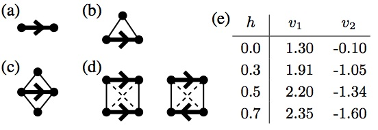

Self-assembly of colloidal polymers via depletion-mediated lock and key binding†
Douglas J. Ashton,*a Robert L. Jack,a and Nigel B. Wildinga
Received Xth XXXXXXXXXX 20XX, Accepted Xth XXXXXXXXX 20XX
First published on the web Xth XXXXXXXXXX 200X
DOI: 10.1039/b000000x
We study the depletion-induced self-assembly of indented colloids. Using state-of-the-art Monte Carlo simulation techniques that treat the depletant particles explicitly, we demonstrate that colloids assemble by a lock-and-key mechanism, leading to colloidal polymerization. The morphology of the chains that are formed depends sensitively on the size of the colloidal indentation, with smaller values additionally permitting chain branching. In contrast to the case of spheres with attractive patches, Wertheim’s thermodynamic perturbation theory fails to provide a fully quantitative description of the polymerization transition. We trace this failure to a neglect of packing effects and we introduce a modified theory that accounts better for the shape of the colloids, yielding improved agreement with simulation.
The goal of self-assembly is to tailor the interactions among nano-scale particles so that they spontaneously assemble themselves into functional materials or devices 1,2. Such processes are widespread in biology, where they have been optimised by evolution so that assembly is rapid and reliable. However, mimicking this behaviour in the laboratory involves many challenges, particularly the design and synthesis of particles whose interactions can be accurately predicted and controlled. Notable experimental successes have included assembly of unusual crystals from either “patchy” or DNA-functionalised colloids 3,4. More recently, particles have been shown to self-assemble into structures that depend strongly on their geometrical shapes 5,6,7,8,9,10,11, and the role of shape and packing effects in self-assembly has also attracted theoretical and computational interest 8,9,10,11,12,13,14,15,16,17,18,19. Here, we use computer simulations to show how self-assembly of indented colloidal particles can be tuned by subtly varying their shape and interactions, in a manner that should be accessible in experiment 6.

To this end, we exploit depletion forces 20, which enable the precise control of particle interactions that is required for self-assembly. Depletion is an attractive interaction between colloid particles that arises when they are mixed with much smaller ‘depletant’ particles, for example polymers or another species of colloid. These forces are particularly strong in colloids with complementary geometrical forms, such as buckled spheres 6 or bowl shapes 8. Such systems can assemble via “lock and key binding” in which the convex part of one particle interlocks with the concave part of another 6,13,21. Fig. 1 shows the results of a computer simulation, where colloids with self-complementary shapes 6 have assembled themselves into chains, in the presence of depletant particles. We show in the following that the properties of these “colloidal polymers” can be controlled through the colloidal shape and the depletant number density. The persistence length of the polymer depends on the colloidal shape, and for some shapes, the chains can also branch, leading to interconnected networks of particles.
We emphasize that the complementary shapes of colloidal particles 6,23,24 and properties of the depletion interaction can both be measured and controlled in experiments. Indeed, some depletants even allow colloid interactions to be tuned in situ 5,25,26, potentially leading to real-time adaptive control of interaction parameters 27. However, the experimental parameter space associated with mixtures of colloid and depletant particles is very large, depending on the size, shape and concentration of both species. Theory and computer simulation can therefore offer guidance for experiment, by predicting the parameters for which robust assembly occurs, and the likely nature of the self-assembled products. We argue that such simulations should deal explicitly with the depletant particles, both in the interests of reproducing the experimental reality and for avoiding the need to develop effective (“depletion”) potentials, which for irregularly shaped particles represents a formidable task.
We give details of our model and simulation techniques in Sec. 2, with numerical results in Sec. 3. In Sec. 4 we discuss how Wertheim’s theory of associating fluids can be applied to this system. Our conclusions are summarised in Sec. 5. In addition, some further details of our theoretical calculations are presented in electronic supplementary information.
We used state-of-the-art Monte Carlo (MC) simulation techniques to study spherically-indented colloids, together with smaller hard sphere particles which act as a depletant. The shape of each indented colloid begins as a hard sphere of diameter σl = 1, from which an indentation is formed by cutting away a sphere of the same diameter, whose center is a distance dc from the center of the original sphere. Thus, the dimensionless depth of the indentation is h ≡ 1-dc∕σl. Our systems contain N = 60 colloid particles in a box of size V , with a number density ρ = N∕V = 0.2σl-3, and we consider values of h between 0.3 and 0.7. The hard spheres comprising the depletant fluid have diameter σs = 0.1σl. The colloid shape and the size ratio between colloids and depletant are consistent with experimental studies 6.

To obtain accurate computational results for this system, we use a variant of the geometrical cluster algorithm (GCA)28. This is a sophisticated Monte Carlo scheme that updates large groups (“clusters”) of particles, with both colloids and depletants moving together. The scheme respects detailed balance, ensuring that it samples the Boltzmann distribution of the system. Use of such a specialized technique is essential for coping with the disparity in size between colloids and depletant. Standard Monte Carlo and Molecular Dynamics techniques are unequal to the task of relaxing such systems because the depletant acts to frustrate colloidal motion except on very small length scales. This problem can be readily appreciated from Fig. 1.
The GCA is based on self-inverse geometric operations that can be tailored to effectively sample the system of interest. In the case of self-assembled structures it is essential that relaxation occurs on all length scales to ensure ergodicity. To this end we use the combination of updates described in Fig. 2: A “pivot” (point reflection) operation (see Fig. 2(a)) is employed to relax particle positions, while a plane reflection operation 29 allows colloids to sample different orientations. We combine these two kinds of move to sample the equilibrium state of the system.
Pivot moves are effective in moving clusters of colloids that have started to assemble. These moves are rejection-free by construction, and the pivot point is chosen at random. For reflection moves, we choose the reflection planes to aid relaxation of single monomers within their binding pockets, and to promote flexing of the colloidal chains. For the former case, we use moves where the reflection plane is constrained to lie close to the orientation vector of a monomer in the chain (Fig. 2(b)). In the latter case, the plane is placed through the center of the monomer, at an arbitrary angle to the orientation vector (Fig. 2(c)). Since the reflection plane is not typically placed along one of the box axes, care must be taken as the cluster move may conflict with the periodic boundary conditions. We avoid this problem by rejecting moves in which any particle in a cluster is interacting with a particle from another periodic image of the system 29. All updates exploit a highly efficient hierarchical overlap search algorithm that allows us to determine whether a proposed move leads to overlaps of our anisotropic particles30,31,32.
The depletant particles are treated grand-canonically in our simulations. That is, their number is free to fluctuate, corresponding to the common experimental situation of a depletant that is in equilibrium with a bulk reservoir. We therefore quote the depletant reservoir volume fraction ηsr = Nsπσs3∕(6V ) as a measure of the driving force for depletion induced assembly, where Ns is the average number of depletant particles.

We now present our simulation results. We first assess how the degree of polymerization depends on the depletant volume fraction ηsr. To this end, we label the indentation on each colloidal particle as its “lock site”. The concave part of the surface acts as the “key”, which fits snugly in the lock. Let NL be the average number of lock sites that are available for binding (where no other colloidal particle is already bound), and let NK be the average number of colloidal particles that are not currently occupying any lock site. (Occupation of a lock site is decided on the basis of a radial cutoff criterion; results are insensitive to the choice of this cutoff). The number densities of such particles are then ρL = NL∕V and ρK = NK∕V . We also define X = ρL∕ρ. For an unassociated fluid, X ≈ 1; for a system consisting of long colloidal polymers then X ≈ 0. If the polymers are ‘tree-like’ (without closed loops), then the average degree of polymerization is 1∕X.

Fig. 3(a) depicts our measurements of X (black circles) for various h, as the depletant volume fraction ηsr is increased. The range of ηsr over which polymerization occurs is quite narrow in each case (particularly for deep indentations), and this range is shifted to smaller ηsr as h increases. Physically, the lock-and-key binding is strongest when the colloid indentations are deep, and the shape complementarity is most pronounced. At the largest values of ηs, almost all the colloids are members of chains, X ≈ 0. As well as the results shown here for N = 60 colloidal particles, we have also performed a limited set of simulations for N = 120, under the same conditions. We find fully quantitative agreement between results for these two system sizes, indicating that finite-size effects are relatively small, at least for the quantities measured here
Fig. 4 shows snapshots of the equilibrated polymer configurations that form for h = 0.5 and h = 0.3, at values of ηsr corresponding to X ≈ 0.1. Compared with the results for h = 0.7 (Fig. 1) one observes that deeper indentations result in stiffer chain conformations. To quantify these differences, we have measured the persistence length b, defined through ⟨cos(θk)⟩ = e-kσl∕b, where θk is the angle between orientation vectors of colloid particles that are kth neighbours in the chain. Thus, large values of b correspond to stiff chains: for h = (0.3,0.5,0.7), we find b = (1.0,3.3,9.1)σl.

These values can be explained by a simple geometrical argument, illustrated by the two particles shown in in Fig. 5. The angle α depends on the colloidal shape, as cosα = (1-h). We suppose that particle 2 can bind on any part of the surface of lock 1, as long as θ < π -2α, where θ is the angle between the orientation vectors of the colloids as shown. For particles in contact, this is the condition that all of the concave surface of particle 2 is in contact with the convex surface of particle 1. For bonded particles, we recognise θ as the usual polar angle in spherical co-ordinates. To calculate the average of this quantity subject to the constraint θ < π -2α, we write ⟨cosθ⟩ = (1∕Z)∫ 0π-2αcosθ sinθdθ where Z = ∫ 0π-2αsinθdθ is a normalisation constant (the volume element sinθdθ arises from the spherical geometry, as usual). Evaluating the integrals yields ⟨cosθ⟩ = [1+cos(π -2α)]. From the definition of α one has cos(π -2α) = 1-2(1-h)2, and assuming that angles along a chain are independently distributed in this way, one has e-σl∕b = ⟨cosθ⟩, yielding the relation σl∕b = -log[h(2-h)] For the colloids with h = (0.3,0.5,0.7) considered here, this argument predicts b ≈ (1.5,3.5,10.6)σl, in reasonable agreement with the simulation result given above. These results illustrate how the properties of self-assembled colloidal polymers may be controlled through the geometrical shape of the colloids.
For shallower indentations the assembled polymers may support branching. This is only possible when the indentation is small enough for two colloid particles to “lock onto” the convex part of a third one. The marginal case is h = 0.5, for which a single key surface can just accommodate two locks. As h decreases, the branching probability increases rapidly. When bonds are strong (X < 0.1 as in Fig. 4), we find that the fractions of particles involved in branching for h = (0.5,0.4,0.3) are (1%,9%,15%). Again, by changing the colloid shape, the self-assembled chains can be varied from linear polymers (h = 0.7) to chains with a few branches (h = 0.5), and finally (h = 0.3) to strongly branched structures. In the strongly-branched case, we also sometimes find a cluster of bound particles that percolates (spans the simulation box). More detailed characterisation of both percolation transitions and liquid-vapour phase transitions in this system would be useful avenues for future study, but they are beyond the scope of this work, due to the computational difficulty associated with our exact treatment of the depletant fluid.
Given the range of chain lengths, persistence lengths and branch-point densities that are possible on varying just the depletant density ηsr and the indentation depth h, theoretical insight is very valuable in guiding choices of colloidal geometry and depletant parameters, both in simulation and, potentially, in experiment. We have applied Wertheim’s theory of associating fluids 33 to these indented colloids, following the work of Sciortino and co-workers 22,34 on ‘patchy’ colloids. This theory generalizes liquid state theory, incorporating steric constraints. For example, at most one particle may occupy any lock site; we also assume that chain branching may not occur, which is valid for h ≳ 0.5. Within the theory, depletion interactions appear as two-body effective interactions between the colloidal particles, obtained formally by integrating out the depletant fluid. Based on these assumptions, Wertheim’s theory gives a diagrammatic series for the density functional of the system, from which the number densities ρL and ρK may be derived. This section contains a summary of this theoretical analysis, concentrating on the physical insight it provides. In the supplementary information 35, we provide the formulae that we use to obtain the predictions in Fig. 3, although we defer the proofs of these formulae to a later publication.
At leading order, Wertheim’s theory reduces to the familiar law of mass action: ρLK = ρLρKK0 where ρLK = ρ -ρL is the number density of bonds (i.e. the number density of occupied lock sites), and K0 is the bare equilibrium constant, which depends on the attractive forces between particles. The law of mass action applies quite accurately in the dilute limit ρσl3 ≪ 1, but to go beyond this limit, one must also take account of repulsive forces between particles, and the resulting packing effects. The second part of Wertheim’s theory achieves this by a perturbative expansion about a reference system without any attractive interactions (ηsr = 0). The theory is therefore accurate if the packing of particles in the presence of attractive forces is very similar to their packing in the reference system. Formally, the thermodynamic perturbation theory (TPT) of Wertheim approximates the density functional of the system by an infinite subset of terms in its diagrammatic expansion. The result is that the bare equilibrium constant K0 in the law of mass action is replaced by 34
|
| (1) |
Here ω1,ω2 represent the orientations of two particles, with r12 the vector between them, and Ω is the phase space volume associated with one particle’s orientation. Also, gR(r,ω1,ω2) is the two-particle distribution function in the reference system (without attractions), while fA(r,ω1,ω2) is a Mayer-f function associated with the attractive part of the effective interactions between particles. In the dilute limit, gR = 1 except when the two particles overlap, and one recovers the standard formula for the bare equilibrium constant K = K0. Outside the dilute regime, particle packing effects are taken account of through gR.

For the spherical patchy particles considered by Sciortino and co-workers34, gR can be approximated from Percus-Yevick theory, and fA is known exactly. Thus, the TPT calculation can be performed analytically, and it describes simulation data very accurately (see Fig. 6a). For indented colloids, neither gR nor fA is known exactly, but gR may be obtained from a simulation of the reference system of indented colloids in the absence of depletant, and fA from a simulation of two particles in the presence of depletant. The integral in (1) can then be calculated. We emphasise that the function gR is evaluated in a system with no depletion interactions, so a single measurement of this function can be used (in conjunction with fA) to predict the behaviour for a wide range of η. The resulting TPT predictions are shown in Fig. 3(b) and (c) for h = 0.7 and h = 0.5 respectively: the agreement is reasonable but there are deviations of up to 20% between theoretical and simulation values for X. We attribute these deviations primarily to the differences in the packing properties of colloidal polymers, compared to isolated monomers. As evidence for this, Fig. 6b shows results for indented colloids with “patchy” interactions. This model system differs from the patchy spheres only in the colloid shape and the patch location (there are no depletant particles) – it is clear that the TPT is less effective when colloids have non-spherical shapes. In the following paragraphs, we discuss how these shape (or packing) effects can be analysed within Wertheim’s theory. Another possible origin for deviations between theory and simulation in Fig. 3 is that the TPT does not fully describe the attractive forces between colloids – we discuss this further at the end of this section.
To explore shape effects, we return to the diagrammatic analysis of Wertheim, but instead of following the TPT, we consider just a few simple terms in the density functional: see Fig. 7. Under this approximation, the law of mass action is replaced by
|
| (2) |
Here, v1 and v2 are geometrical factors (independent of ηsr) that account for packing of free particles and short chains: the relevant liquid-state diagrams are shown in Fig. 7 while formulae for these quantities are given as supporting information 35. Within Wertheim’s TPT, the v1-term is included, but the v2-term is absent. Further, comparison between (2) and the law of mass action shows that the effective equilibrium constant ρLK∕(ρLρK) now depends on the degree of polymerization of the system, via the v2-term. This constant (and hence the quantity X) must therefore be determined self-consistently by solving (2), so we refer to the analysis in the presence of the v2-term as self-consistent Wertheim (SCW) theory.

We have obtained values for v1 and v2 by simulating very small systems (up to 4 indented particles, without depletant). Results are shown in Fig. 7(e). Using these values in (2) leads to the SCW predictions shown in Fig. 3. In terms of the density functional, SCW theory is a much cruder approximation than TPT. However, the SCW theory performs significantly better than TPT: for h = 0.5, it accounts for around half of the deviation between theory and simulation.
The origin of this effect is the v2-term in (2). Physically, the v1-term in that equation (included in both TPT and SCW theories) reflects the increased virial pressure in the system as the colloid number density increases, and enhances polymerization. The v2-term reflects differences in packing properties between free particles and assembled chains. We find v2 < 0, indicating that as polymerization occurs, the virial pressure is reduced (compared with TPT), suppressing further chain formation. For spherical patchy particles (h = 0), Fig. 7(e) shows that the magnitude of v2 is small, consistent with the success of TPT in that case (Fig. 6). However, the size of v2 grows as h is increased, leading to the deviations from TPT shown in Fig. 3. The SCW theory accounts for some of these deviations, although agreement is still not perfect. Unlike the TPT, the SCW theory could be improved systematically, by including further terms in the density functional. However, the theory presented here shows that packing effects of non-spherical particles can significantly affect self-assembly, and are required for quantitative predictions.
Finally, we analyse one other possible origin for the deviations between TPT and simulation results in Fig. 3. As well as lock-and-key binding, the depletant particles also lead to an attractive interaction between the concave (key) surfaces of the indented colloids. This effect is not accounted for in the TPT and SCW theories: we therefore considered a refined TPT in which such “key-key” binding is included. Let ρKK be the number density of key-key bonds (defined through a radial cutoff by analogy with ρLK). Then the law of mass action predicts ρKK = KbbρK2 where Kbb is an equilibrium constant. This key-key binding reduces the availability of particles for lock-and-key binding, increasing the values of X observed in simulation. The TPT can be straightforwardly generalised to include an estimate for Kbb. For those state points in Fig. 3(b,c) where the depletion interaction is strong, we find Kbb ≪ K, so lock-and-key binding is dominant; when the interaction is relatively weak we find ρKbb ≪ 1, so bonds are rare. Together, these results indicate that key-key binding is a weak effect. To verify this, we used K and Kbb to calculate predictions for X, noting that the number density of key surfaces that are available for binding is ρK = ρ -ρLK -2ρKK. As expected, the inclusion of the ρKK term in this equation reduces the TPT prediction for ρLK. However, the small value of Kbb means that this leads to a barely-discernible change in the TPT results of Fig. 3 (the differences between modified and unmodified TPT results are comparable with the line widths). This reinforces our conclusion that it is primarily the shape and packing properties of the indented colloids that lead to deviations from TPT predictions.
The sophisticated Monte Carlo techniques that we have applied here show that indented colloids can assemble into chains, with persistence lengths and branching properties controlled by the colloid shape and depletant density. Two variants of Wertheim’s theory have been analysed, showing how particle shapes can influence their self-assembly. In addition to the colloidal polymers shown here, we also emphasize that the combination of depletion interactions and colloidal shape has potential application for many other self-assembled structures too, and that the simulation and theoretical methods used here can be readily applied in those cases. Given that depletant parameters and the shapes of indented colloids can both be controlled in experiments 5,6,7,23,24,25,26, we hope that these results will stimulate further experimental studies of self-assembly in these systems.
† Electronic Supplementary Information (ESI) available: [details of any supplementary information available should be included here]. See DOI: 10.1039/b000000x/
aDepartment of Physics, University of Bath, Bath BA2 7AY, United Kingdom; Fax XX XXXX XXXX; Tel: XX XXXX XXXX; E-mail: d.ashton@bath.ac.uk
‡ Additional footnotes to the title and authors can be included e.g. ‘Present address:’ or ‘These authors contributed equally to this work’ as above using the symbols: ‡, , and . Please place the appropriate symbol next to the author’s name and include a \footnotetextentry in the the correct place in the list.
1 G. M. Whitesides and B. Grzybowski, Science 295, 2418 (2002).
2 S.C. Glotzer and M.J. Solomon, Nature Mat. 6, 557 (2007).
3 D. Nykypanchuk, M. M. Maye, D. van der Lelie and O. Gang, Nature 451, 459 (2008).
4 Q. Chen, S. C. Bae and S. Granick, Nature 469, 381 (2011)
5 L. Rossi, S. Sacanna, W. T. M. Irvine, et al., Soft Matter, 7, 4139 (2011).
6 S. Sacanna, W. T. M. Irvine, P. M. Chaikin, and D. J. Pine, Nature 464, 575 (2010).
7 S. Sacanna, M. Korpics, K. Rodriguez, L. Colon-Melendez, S.-H. Kim, D. J. Pine and G.-R. Yi, Nat. Comm. 4, 1688 (2013).
8 M. Marechal, R. J. Kortschot, A. H. Demirs, A. Imhof and M. Dijkstra, Nano Lett. 10, 1907 (2010)
9 J. Henzie, M. Grnewald, A. Widmer-Cooper, P. L. Geissler and P. Yang, Nature Mat. 11, 131 (2012).
10 W. Qi, J. de Graaf, F. Qiao, S. Marras, L. Manna and M. Dijkstra, Nano Lett. 12, 5299 (2012).
11 D. J. Kraft, R. Ni, F. Smallenburg, M. Hermes, K. Yoon, D. A. Weitz, A. van Blaaderen, J. Groenewold, M. Dijkstra, and W. K. Kegel, Proc. Natl. Acad. Sci. U.S.A. 109, 10787 (2012).
12 P. F. Damasceno, M. Engel and S. C. Glotzer, Science, 337, 453 (2012)
13 G. Odriozola, F. Jimenez-Angeles, and M. Lozada- Cassou, J. Chem. Phys. 129, 111101 (2008); Phys. Rev. Lett. 110, 105701 (2013).
14 S. Torquato and Y. Jiao, Nature 460, 876 (2009)
15 R. Ni, A. P. Gantara, J. de Graaf, R. van Roij and M. Dijkstra, Soft Matter 8, 8826 (2012)
16 P. Damasceno, M. Engel, and S. C. Glotzer, ACS Nano 6, 609 (2012).
17 A. Haji-Akbari, E. R. Chen, M. Engel and S. C. Glotzer, Phys. Rev. E 88, 012127 (2013).
18 A. P. Gantapara, J. de Graaf, R. van Roij and M. Dijkstra, Phys. Rev. Lett. 111, 015501 (2013).
19 G. Anders, N. K. Ahmed, R. Smith, M. Engel, and S. C. Glotzer, arXiv:1304.7545
20 H. N. W. Lekkerkerker and R. Tuinier, Colloids and the Depletion Interactions, Vol. 833 of Lecture Notes in Physics (Springer, Berlin / Heidelberg, 2011).
21 P.-M. Knig, R. Roth, and S. Dietrich, EPL 84, 68006 (2008).
22 E. Bianchi, J. Largo, P. Tartaglia, E. Zaccarelli and F. Sciortino, Phys. Rev. Lett. 97, 168301 (2006).
23 S. Sacanna, W. T. M. Irvine, L. Rossi and D. J. Pine, Soft Matter, 7, 1631 (2011)
24 J. Bahadur et al., Langmuir 28, 1914 (2012).
25 A. M. Alsayed, Z. Dogic and A. G. Yodh, Phys. Rev. Lett. 93, 057801 (2004)
26 J. R. Savage and A. D. Dinsmore, Phys. Rev. Lett. 102, 198302 (2009).
27 D. Klotsa and R. L. Jack, J. Chem. Phys. 138, 094502 (2013).
28 J. Liu and E. Luijten, Phys. Rev. Lett. 92, 035504 (2004).
29 D. W. Sinkovits, S. A. Barr, and E. Luijten, J. Chem. Phys. 136, 144111 (2012).
30 M. Marechal and M. Dijkstra, Phys. Rev. E 82, 031405 (2010).
31 M. He and P. Siders, J. Phys. Chem. 94, 7280 (1990).
32 G. Cinacchi and J. S. van Duijneveldt, J. Phys. Chem. Lett. 1, 787 (2010).
33 M. S. Wertheim, J. Stat. Phys. 35, 19 (1984); 35, 35 (1984); 42, 459 (1986); 42, 477 (1986).
34 F. Sciortino, E. Bianchi, J. F. Douglas, and P. Tartaglia, J. Chem. Phys. 126, 194903 (2007).